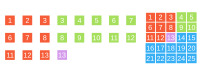
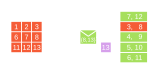
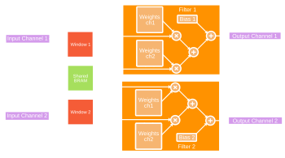
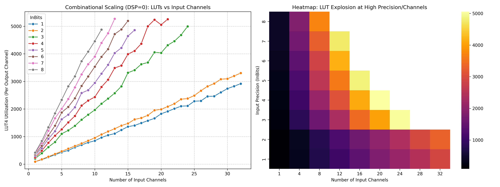
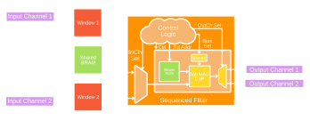
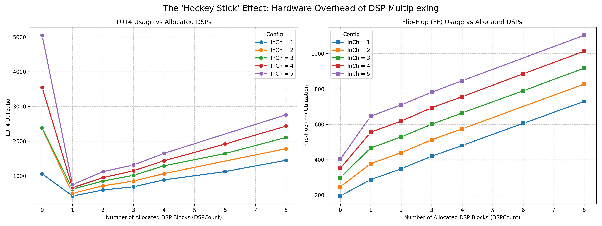
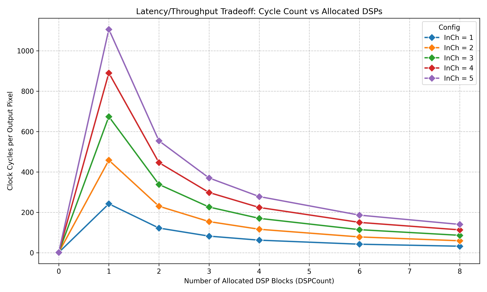
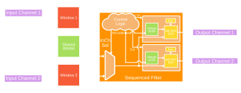
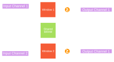
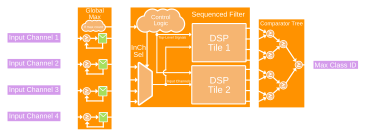

Chapter 3: Architectural Design
Computer vision is the subfield of AI focused on image processing and inferring meaning from the real world. By training neural networks on curated libraries of images, AI can effectively learn hidden spatial correlations to detect and classify subjects. While newer architectures, such as vision transformers, excel at capturing the entire image within a single global context, this comes at the cost of enormous compute and memory overhead. For constrained edge devices, inference requires an architecture that prioritizes mathematical efficiency and a minimal memory footprint. Convolutional Neural Networks (CNNs) remain the foundational standard for this domain. By applying shared weights across a local, sliding context, CNNs maximize data reuse significantly reducing memory bandwidth requirements, and making them perfectly suited for low-power hardware acceleration.
The CNN architecture consists of repeated layers of convolution followed by max pooling which selects only the highest value within each window. This combined layer detects spatial features while concentrating the output activation so deeper layers in the sequence can form deeper correlations. After the last layer, global max propagates only the largest value in the remaining frame towards a final 1x1 convolution. Finally a comparator selects the highest value and outputs the corresponding classification, effectively translating pixels to inference.
Convolution Architecture
Convolution exploits two forms of locality: spatial and temporal. Given any input image and a 3x3 kernel, each row of the kernel window consists of three neighboring pixels. When the kernel slides from left to right across the input image it reuses columns two and three, only requiring one new column per operation. However because the kernel translates vertically as well as horizontally, the previous two rows are subject to temporal locality and reused. Streaming architectures capitalize on this behavior to produce a new convolution each cycle with only a single new input pixel by utilizing line buffers to cache the previous rows.
This massive data reuse is what sets this architecture apart; repeated memory accesses are exceedingly costly, creating a bottleneck known as the memory wall. This issue compounds when cascading layers, as each successive layer expands the receptive field, introducing an exponential data dependency. In other words, computing a deep feature without data reuse requires redundantly fetching exponentially larger windows of base pixels.

As illustrated in Figure 3.1, the architecture sustains a single-cycle access pattern by chaining K-1 circular buffers head to tail, where each head is tapped by column K of the kernel window. These buffers must each cache an entire row of the input image, but when images exceed 160 pixels wide, this quickly outscales a simple shift register implementation.

Instead, line buffers are mapped directly to the Lattice iCE40's 4Kb Block RAMs (BRAMs). Because the FPGA only contains 30 BRAMs, and each natively supports a 16-bit data width, dedicating a full BRAM for each circular buffer would rapidly exhaust these limited resources. Because inputs are often 4-8x smaller, BRAM usage can easily be halved by packing K-1 circular buffers onto a single, widened memory word. In Figure 3.2, a single 16-bit BRAM entry holds two 8-bit taps for a given column. During each cycle, the entry is read, the older pixel (lower byte) is combinatorially shifted to the upper byte, and the new incoming input pixel is appended to the lower byte before being written back.

Consequently, the input image width dictates the required circular buffer depth, which in turn defines the total number of parallel RAM blocks needed. To scale this architecture, each module is heavily parameterized for any possible configuration in the CNN, allowing for any number of input and output channels, any bitwidth for weights, biases, input, and output activations. Kernel width can be configured, as well as stride and padding. Figure 3.3 illustrates this dimensional expansion for a configuration mapping two input channels to two output channels. To sustain the single-cycle access pattern, the RAM word is further widened to pack four row taps (two per input channel). Simultaneously, the spatial window broadcasts to two independent filter modules, each containing the two weight matrices necessary to compute the full inner product for its respective output channel. However the most critical parameter is DSPCount, which determines how many DSP multipliers to divide the workload over.

When DSPCount = 0, the layer is spatially unrolled into a fully combinational datapath and mapped entirely to LUTs (Look-Up Tables). While this configuration yields the highest possible throughput, it traditionally comes at the cost of explosive multiplication complexity. However, this growth is linearized when weights are quantized to binary {-1,1} or ternary {-1,0,1} states. Because binary and ternary operations simplify to merely adding or subtracting the input multiplicand, the hardware requirement experiences a quadratic reduction in complexity.
As a result, the dominant factor shifts from multiplication complexity, to adder tree complexity which scales logarithmically with the total multiplication count per output channel. This can be seen in Figure 3.4: when weight bitwidth is fixed to two bits, binary and ternary input bitwidths yield the lowest LUT4 cost. For this reason, designers should limit the use of fully unrolled combinational layers (DSPCount=0) to the shallower, earlier channel-sparse layers.



For deeper, channel-dense layers, it becomes highly efficient to sequence multiplications over hard DSP blocks, resulting in a temporally folded, time-multiplexed datapath. By padding multiplicands to 16-bits and preloading the bias in the initial cycle, 32-bit Multiply-and- accumulate mode of Lattice's SB_MAC16 [8] is targeted via behavioral inference in Figure 3.5. While this drastically reduces combinational LUT4 overhead in Figure 3.6, it comes at the cost of higher FF utilization for the control logic, and higher cycle latency, as shown in Figure 3.7. To mitigate this latency and alleviate upstream pipeline bottlenecks, the architecture supports parallelizing the workload across up to eight distributed DSPs as seen in Figure 3.8. Crucially, because the datapath parallelizes across the outermost loop of the convolution iteration space, total output channels must be divided evenly among the available DSPs. Therefore, it is strongly advised for designers to select highly divisible channel counts (e.g., 8, 12, 16) to maximize resource utilization and improve design flexibility.

This improved channel density is not the only advantage of sequenced layers, but greater precision for virtually no cost. Because DSPs natively support 16x16 multiplication, the tradeoff for increased precision is no longer measured in LUT area, but rather in the Flip-Flop (FF) overhead required to instantiate the state-machines, sequencers, and synchronization registers that feed each physical DSP. Furthermore, because only one weight is accessed per cycle, weights no longer have to be simultaneously loaded as parameters, but can be read off of ROM when needed, effectively isolating precision from hardware cost. The remaining BRAMs can easily be synthesized as 8-bit wide ROMs for a favorable precision in these critical layers.
Pooling Architecture

Pooling is equally important in convolutional neural networks, as it condenses learned features at each stage, reducing computational cost while increasing the spatial hierarchy of the data. Data-movement for this operation is identical to spatial convolution, however as seen in Figure 3.9, the arithmetic is replaced with a maximum function. Furthermore, pooling is functionally distinct because its kernel placements are mutually exclusive. For example, a 2x2 pooling kernel with a stride of two does not overlap with adjacent windows; each input pixel is evaluated exactly once, resulting in a 4:1 reduction after each pooling layer.
From a hardware perspective, finding a maximum value requires only a peak detector. An average, however, requires a division operation, which consumes significant logic area for non-powers of two. For this reason, the architecture restricts average pooling to kernel sizes of 2x2 and 4x4, ensuring the total element count (4 and 16, respectively) is a power of two. This allows the expensive division operation to be mapped to a completely zero-cost logical right-shift in the hardware. Because maximum and average operations rely purely on logical comparators and adders, which do not benefit from the hardwired multiplication pipelines of DSP blocks, every pooling layer is completely spatially unrolled into the LUT fabric using zero DSPs. This combinational datapath incurs exceptionally small overhead with maximum throughput.
Classifier Architecture

The classifier as seen in Figure 3.10, serves as the final stage in the CNN architecture, performing a global max pool, an intermediate linear transformation, and an argmax selection to output the maximum class ID. The global max pool extracts the maximum activation from the final spatial feature map; however, rather than instantiating the massive combinational trees used in the standard pooling layers, this stage efficiently utilizes sequential peak detectors on each channel, reporting the highest values after WxH clock cycles. The intermediate convolution acts as a fully connected linear layer (effectively a 1x1 kernel), which is heavily advised to be allocated at least one DSP. Because the primary throughput bottleneck typically before the classifier, this provides enough slack to sequence using an idle DSP to eliminating the combinational adder trees and preserving hundreds of soft Logic Cells (LCs).
The final stage is a hardware implementation of the PyTorch argmax function (comparator) that is explicitly defined as a parallel binary reduction tree. The linear layer outputs populate the leaves of the tree, and each subsequent node combinationally propagates the maximum value and its associated ID from its two predecessors. This structured O(log2N) reduction guarantees minimal logic depth, outperforming naive implementations in both hardware complexity and timing by computing the final class ID in a single, zero-latency combinational pass.